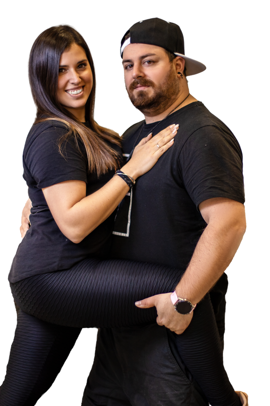

Rebeca y Eder
Zouk brasileño, bachata y salsa.
Rebeca y Eder son codirectores de A Tu Ritmo y pareja de baile profesional desde 2016. Sus trayectorias comenzaron en 2013 y 2008, respectivamente, y se han nutrido de formación con figuras de referencia internacional. Su mayor especialización es el zouk brasileño, disciplina en la que también han desarrollado una destacada actividad como DJs y profesores en eventos de distintos países. Son, además, impulsores de Baila Zouk A Tu Ritmo Congress. Sus clases combinan trabajo técnico, musicalidad y entusiasmo por compartir lo que aprenden.
Entre sus referencias formativas se encuentran Alex de Carvalho, William e Irene y Kadu y Larissa. Su actividad trasciende las aulas a través de sesiones musicales y encuentros internacionales de zouk.
Conoce el perfil de Rebeca y Eder y consulta las clases relacionadas ↗